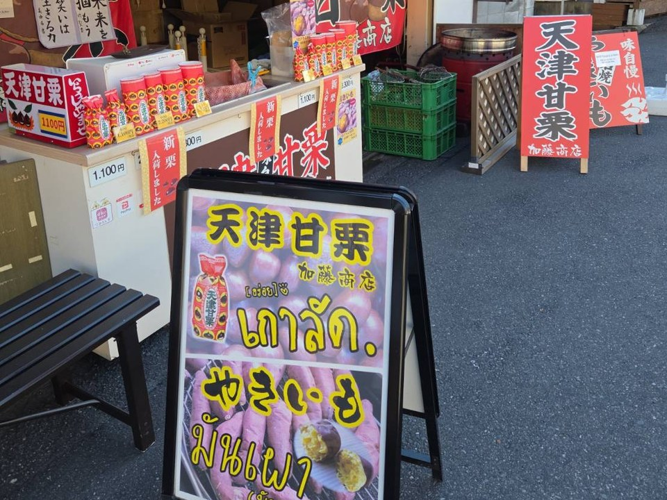

AMAGURI
成田山の門前で、加藤商店は「天津甘栗 味自慢 加藤」の看板を掲げて甘栗を販売しています。たい焼きの店先のすぐ隣、赤いのぼりが目印です。
お客様からは「甘栗屋さんが加藤商店もやっているということでたい焼きを食べてみたら…」というお声もいただくように、甘栗とたい焼き、二つの看板で商いをしています。


写真は2026年11月に貴店からいただいたものです。
SIZE
天津甘栗は、小・中・大・特大の四つの大きさをご用意しています。ご自宅用にも、お配りするお土産にもお選びいただけます。
価格は店頭でご確認ください。
ALSO
「味自慢」の看板で販売している天津甘栗。小・中・大・特大をご用意しています。成田産さつまいもの焼きいもも、同じ店先で。
甘栗の売り場では、成田産さつまいもの焼きいもも販売しています。
VOICE

Googleマップに投稿されたクチコミを、そのまま掲載しています。
FAQ
成田山の門前、千葉県成田市本町337-1 の加藤商店でお求めいただけます。たい焼きの店先の隣、「天津甘栗 味自慢 加藤」の看板と赤いのぼりが目印です。
小・中・大・特大の四つをご用意しています。
9時00分〜17時00分位です。たい焼きの最終受付は16時までとなります。

ACCESS